Eduardo Rodríguez Sánchez, University of Luxembourg,
0250260758@uni.lu
Henrik Klasen, University of Luxembourg,
0221943339@uni.lu PRIMARY
Michalina Miszkiewicz, University of Luxembourg,
0256318125@uni.lu
Tomaz Canabrava, University of Luxembourg,
025338972f@uni.lu
Student Team: YES
React.js, Vite, D3.js
Python, Flask, Pandas
SQLite
Approximately how many hours were spent working on this submission in total?
150h
Video
Provide a link to your video. Example:
http://www.youtube.com/ul-smith-mc3-video.avi
In case LLMs were used for any aspect of this project, teams will disclose in detail the purposes for which they were used.
d3js.py was largely written by hand, while
the database integration into this backend was done using copilot. The settings that were on are:
To get a foundational understanding of the macroeconomic state of
Engagement, Ohio, we executed a series of SQL queries against the core
SQLite database that we obtained from transforming the original
.csv files. For instance, we queried the base population
(SELECT count(*) FROM participants;) and confirmed a sample
size of exactly 1,011 distinct residents. To understand the city's
infrastructure distribution, we aggregated the building data (SELECT buildingType, count(*) FROM buildings GROUP BY
buildingType;), which revealed an almost even split between 512 Commercial and 526
Residential properties, alongside just 4 Schools. Also, we analized the
labor market through the jobs and
employers tables showed that the city hosts 253 active
employers offering an average city-wide wage of $19.13 per hour.
These direct SQL extractions provided the starting state needed to calibrate our visual analytics scales. Given the vastness of the dataset (e.g., granular financial journals, building metadata, check-in logs, and monthly snapshots of participant statuses), we decided to construct composite metrics to evaluate overall systemic health before diving into individual anomalies. We began by developing a "Health Score" for employers based on a weighted combination of job listings, average hourly rates, worker stability, and turnover rates. This composite index served as an fixed point point, allowing us to group the city's employers into "Prosperous," "Neutral," and "Struggling" categories, providing an easy path to drill down into specific business dynamics and resident demographics.
Following Tamara Munzner’s Nested Model for Visualization Design, our
domain problem required abstracting highly granular, multi-table SQLite
data into specific task abstractions: comparing distributions (wage vs.
cost of living), correlating attributes (hourly rates vs. job listings),
and tracing topological networks (labor mobility).
To support these tasks, our visual encoding idioms use pre-attentive
processing. For example, in the Enterprise Health Prosperity Scatter
Plot, spatial position (x/y axes) encodes quantitative data (rate vs.
job count), while size encodes stable worker count. We employed a
traffic-light diverging color scheme (Green = Prosperous, Red =
Struggling) because the human visual system processes hue and spatial
position in under 200ms, enabling instant anomaly detection. We
deliberately separated our visual variables (e.g., using spatial
arrangement for the map and distinct hue gradients for the charts) to
avoid major interference between information channels.
Furthermore, the arrangement of tabs logically groups the analytical
space which, together with the hiddent tooltip, help prevent congnitive
overload. We also deliberately chose to show some data twice across
different views to ensure that relevant information is always locally
close, enhancing the ease and fluidity of comparative analysis.
The dashboard heavily adheres to Ben Shneiderman’s Information
Visualization Mantra: "Overview First, Zoom and Filter, and Details on
Demand."
Overview First: The "City Pulse" tab provides
high-level cards and aggregated time-series line charts of city-wide
wages versus cost of living. It help us get a birds-eye view of the
important metrics for the project.
Zoom and Filter: Users can interact with the "Explorer
Map" (utilizing Pan and Zoom) to investigate geospatial clusters. In the
"Enterprise Health", "Citizen Finances" and "Urban Explorer" tabs, users
can use the Select and Filter interactions to isolate
specific information points.
Details on Demand: Clicking an employer on the explorer
map within "Enterprise Health" opens a dedicated Financials Dashboard
that displays exact monthly breakdowns, operating costs, and profit
timelines. Clicking an employer on the Statistical Trends chart persists
the selection state across the map view to provide spatial context.
The Information Visualization Process pipeline was applied rigorously to
manage the scale of the VAST dataset:
Raw Data: Extracted from SQLite
Data Processing/Filtering: Scripts were used to
aggregate millions of row-level check-ins into monthly employer activity
counts. We joined building polygon coordinates with employer IDs to
enable geospatial mapping.
Normalization: Worker stability and turnover rates were
normalized into a 0.0 to 1.0 index to compute the derived "Health
Score."
Visual Transformation: The normalized indices were
mapped to visual structures in D3.js (e.g., scaling SVG circle radii and
generating path curves for the Mobility Network).
During the analysis, some anomalies emerged, mainly in the "Labor Dynamics" Mobility Network map. We observed massive unidirectional worker transfers between particular nodes (employers) that were different from general trends. Instead of dismissing these, we factored them into the analysis as indicators of major corporate acquisitions, mass layoffs, or specific sector expansions within the narrative timeline.
1. We assumed the provided building coordinates map accurately to a
standard Cartesian plane for the Explorer Map rendering.
2. We assumed that "Workplace" check-in volume in the
CheckinJournal is a valid proxy for business activity/foot
traffic, especially for evaluating monthly employer performance.
3. We assumed that a participant's financial stability can be reasonably
modeled by subtracting aggregated "Food," "Shelter," "Education," and
"Recreation" costs from "Wage" income, ignoring potential unrecorded
external expenses.
1 - Over the period covered by the dataset, which businesses appear to be more prosperous? Which appear to be struggling? Describe your rationale for your answers. Limit your response to 10 images and 500 words.
Based on the Enterprise Health Dashboard’s fabricated Health Score (which evaluates employers using job listings, average hourly rates, worker stability, and low turnover) we can clearly distinguish the financial trajectories of businesses in Engagement, Ohio.
The most prosperous businesses are Employer 1786, Employer 877, and Employer 1771. As seen in the Health Ranking, Employers 1786 and 877 lead the city with a Health Score of 0.63, closely followed by Employer 1771 at 0.60. These businesses tightly cluster in the top-right quadrant of the Prosperity Scatter Plot, indicating they successfully sustain both high hourly wages and high job listings simultaneously.
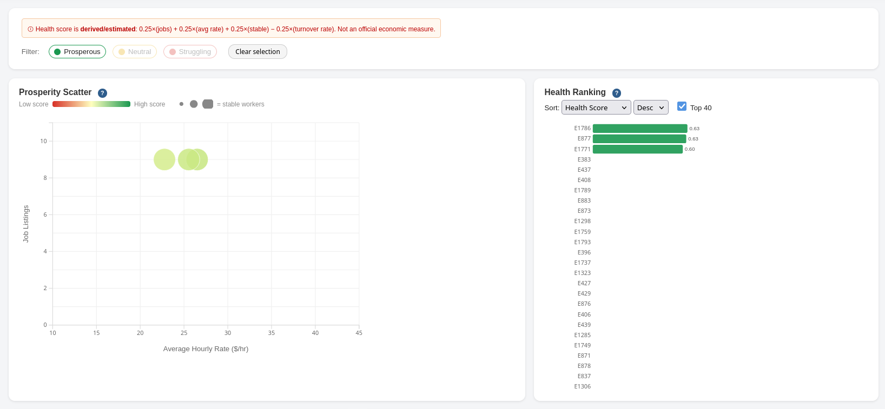
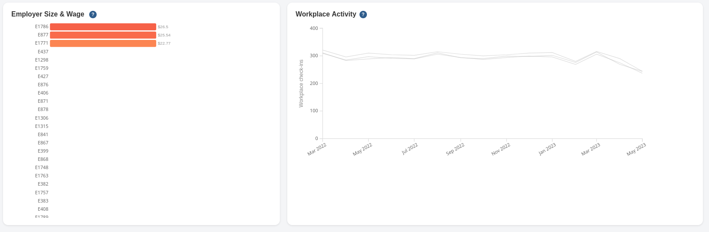
A deep-dive into the financial timeline of Employer 1786 confirms this prosperity is meaningful rather than an anomaly. The employer sustains an average daily revenue of $1,964 and total study-period profit of $88,402. Crucially, the timeline charts reveal that employee count mantains stable (9-10 workers), allowing revenue and profit lines to remain flat and consistent month-over-month. Their high average hourly rate ($26.50) combined with steady workplace activity check-ins shows their position as one of the best economically.
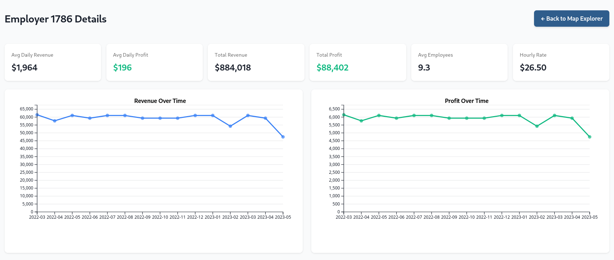
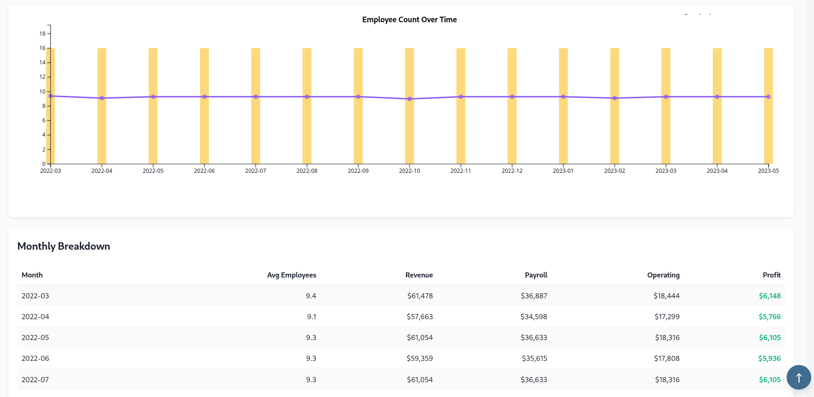
On the other hand, the most struggling businesses are Employer 433, Employer 1756, and Employer 1762. These entities bottom out the Health Ranking with scores of just 0.05. In the Prosperity Scatter Plot, they are grouped tightly in the bottom-left, characterized by minimal job listings, low hourly rates, and high turnover.
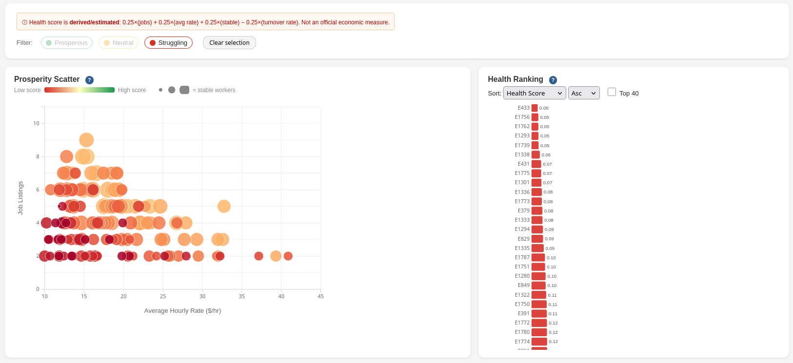
Analyzing a representative struggling firm (such as Employer 420) reveals the anatomy of this distress. The financial dashboard shows only $18 in average daily profit, backed by a low average employment (1.9 workers) and a weak hourly rate ($11.87). More critically, the timeline graphs depict a sharp deterioration: a severe decline in revenue, profit, and employee count between March and April indicates a business in actively decaying. floor.
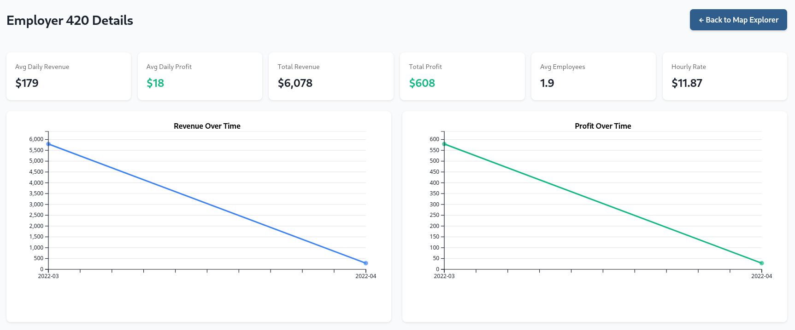
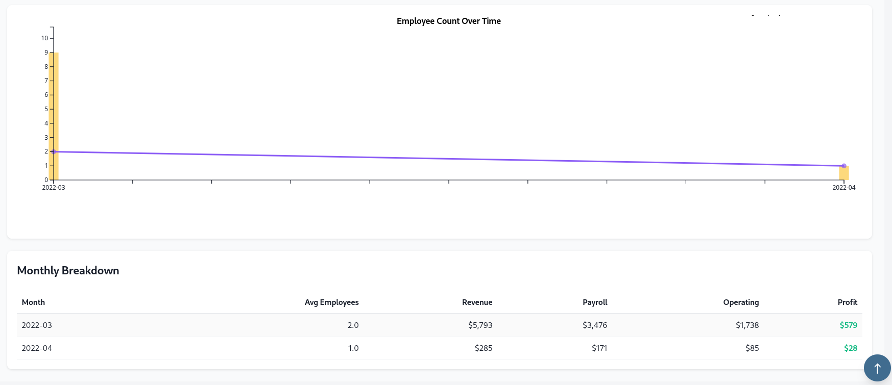
We rely on the dashboard's synthesized Health Score as our primary mechanism to identify the extremes of the market. We then cross-reference those rankings against the detailed, specific financial time-series views. True prosperity in this dataset is defined by consistency: maintaining flat, high revenue lines without workforce shedding. Struggle is defined by volatile, downward-trending metrics. Note that while geospatial data is useful for context, it does not reliably correlate with financial performance, so our rationale is strictly based in the temporal financial and turnover metrics.
2 - How does the financial health of the residents change over the period covered by the dataset? How do wages compare to the overall cost of living in Engagement? Are there groups that appear to exhibit similar patterns? Describe your rationale for your answers. Limit your response to 10 images and 500 words.
Overall, the residents' financial health declines early in the period and then remains fairly flat, with a small bump around early 2023 before a final dip. Wages consistently remain above the overall cost of living throughout the entire period in Engagement. However, because both total wages and net income fall sharply at the start of the timeline while the cost of living stays comparatively sticky (around $1.0M to $1.2M), the primary narrative is not a collapse, but rather a weakening financial position compared to the start of the dataset. Residents, in aggregate, earn more than they spend, but the margin shrinks.
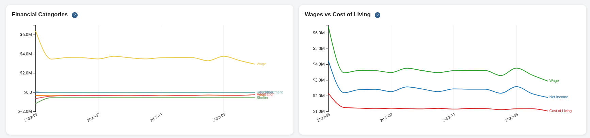
This shrinking margin is backed by the Net Income distribution. The income distribution is highly grouped; a large cluster of residents sit at lower net incomes, while a smaller number of very high earners stretch the average upward. Consequently, while aggregate city-wide financial health looks acceptable, the median resident lives with much tighter margins than the aggregate suggests.
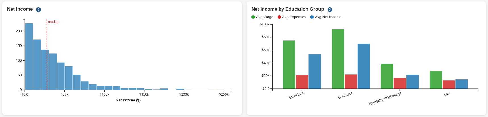
When segmenting the population, two broad clusters appear: a higher-income cluster (Graduates and Bachelors) and a lower-income cluster (HighSchoolOrCollege and Low). Graduate and Bachelors residents enjoy significantly stronger wage cushions. Average net income rests around $70k for Graduates and $53k for Bachelors, but plummets to roughly $22k for HighSchoolOrCollege and $14k for the Low group. This indicates that lower-earning residents bear the brunt of the cost-of-living pressure.
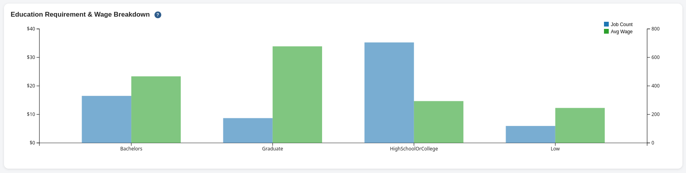
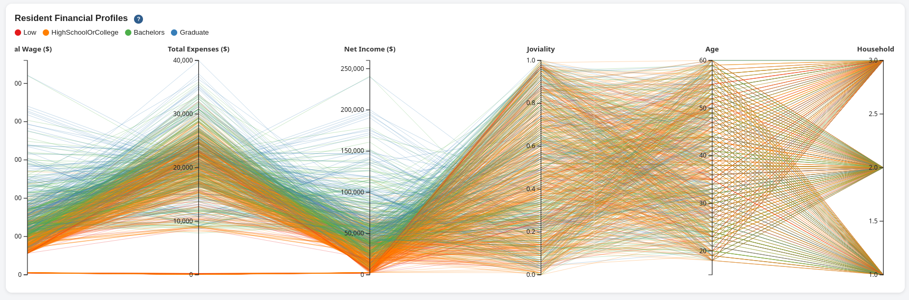
The parallel coordinates view reinforces this disparity. Blue and green lines (Graduates/Bachelors) consistently extend toward higher wage and net income values, while orange and red lines (HighSchoolOrCollege/Low) concentrate lower on those axes. Interestingly, there is significant overlap in spending expenses across all groups, suggesting that the primary driver of inequality in Engagement is wage earning power rather than disparate spending behaviors.
Socially, residents cluster by work and leisure behaviors: one group hovering around 300 workplace visits with moderate leisure, and another around 650 workplace visits with higher leisure activity. Despite clear correlations between education and wages, "Joviality" (happiness) remains widely dispersed across all demographics. Higher earnings do not uniformly translate into a happier population.
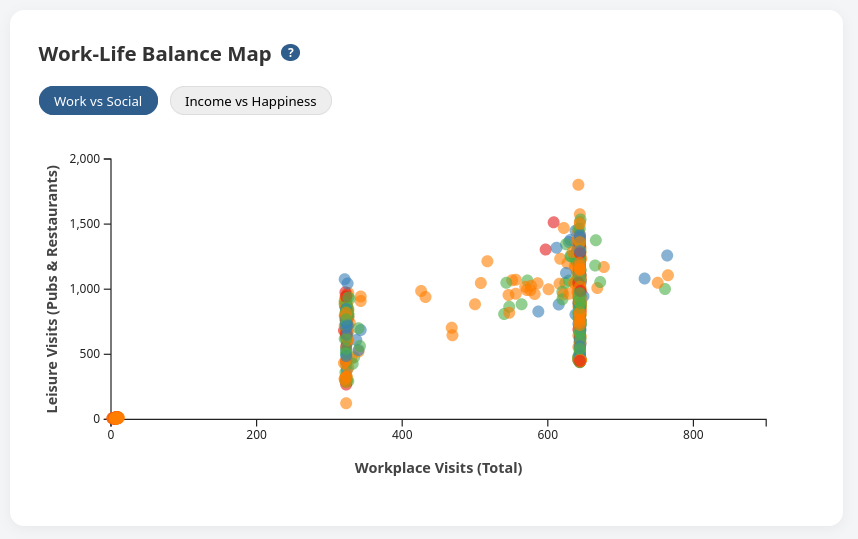
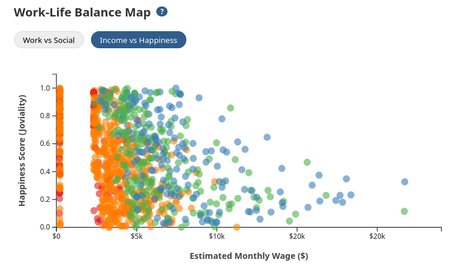
3 - Describe the health of the various employers within the city limits. What employment patterns do you observe? Do you notice any areas of particularly high or low turnover? Limit your response to 10 images and 500 words.
Employer health in Engagement is mixed, but the city does not suffer from widespread corporate collapse. The macroeconomic labor market remains generally stable; as seen in the wage trend analysis, the number of active wage earners stabilizes after an initial drop, and average monthly wages remain fixed in the mid-$3k to low-$4k range. While the Health Ranking correctly identifies the strongest, most stable employers, it is crucial to recognize a nuance in the "struggling" category. Because our heuristic penalizes low occupancy and high inbound worker flow, rapidly growing or newly established companies can initially appear "unhealthy" despite actively hiring.
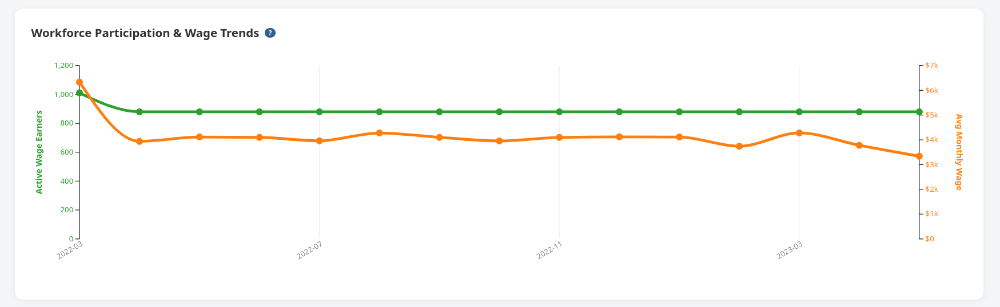
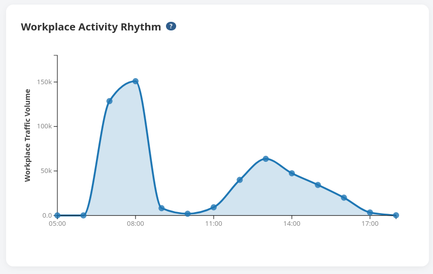
Turnover is not evenly distributed. The highest hotspots include Employers 1763 (0.38 turnover rate), 1735 (0.36), and 1760 (0.22), contrasting sharply with the near-zero turnover of the most prosperous firms. However, analyzing the directional flow of the Mobility Network reveals distinctly different types of high-turnover behavior.
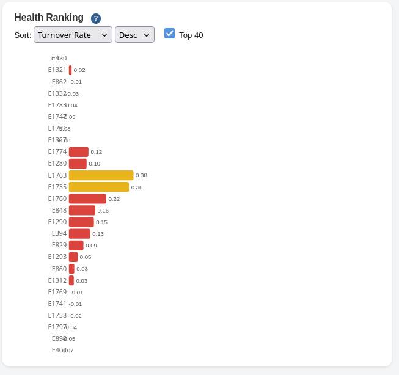
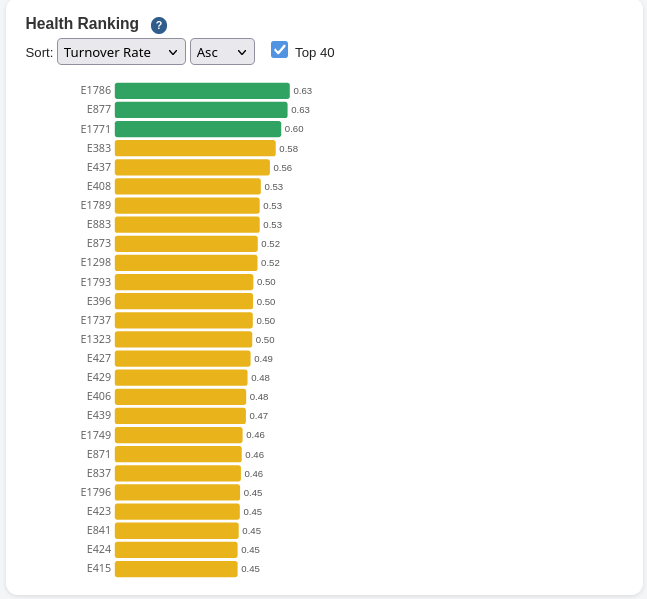
For example, Employer 1793 operates as a "labor exporter," exporting workers heavily to other firms with almost no incoming replacements (a true indicator of poor internal health). Conversely, Employers 420 and 1327 absorb massive incoming worker transfers without losing existing staff. Though mathematically flagged by our health metric as unstable due to the sudden influx, visual network analysis confirms they are actually expanding entities aggressively scaling their workforce.
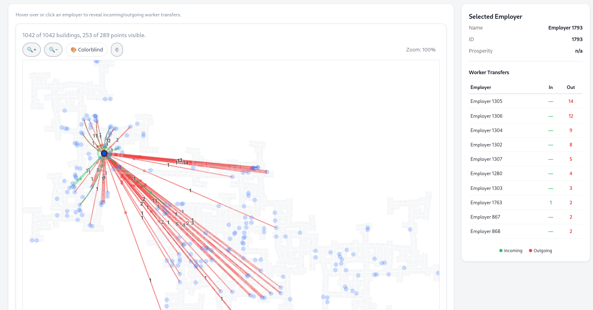
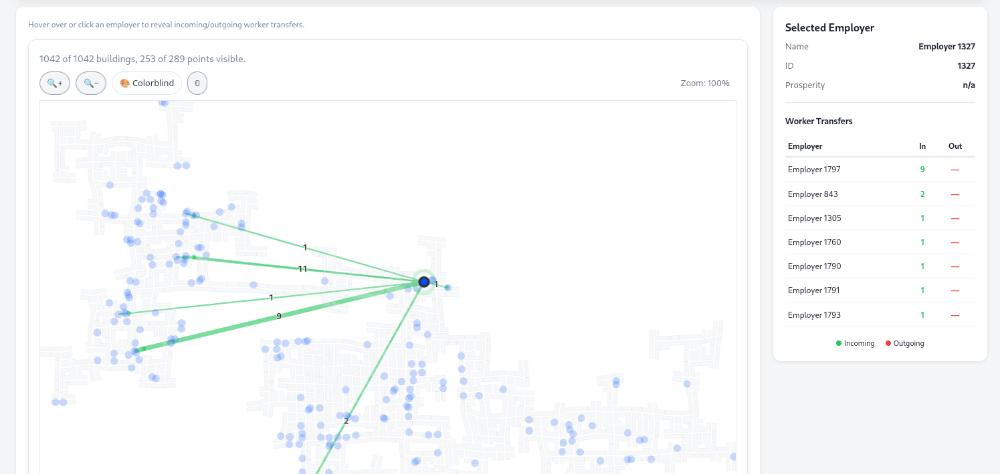
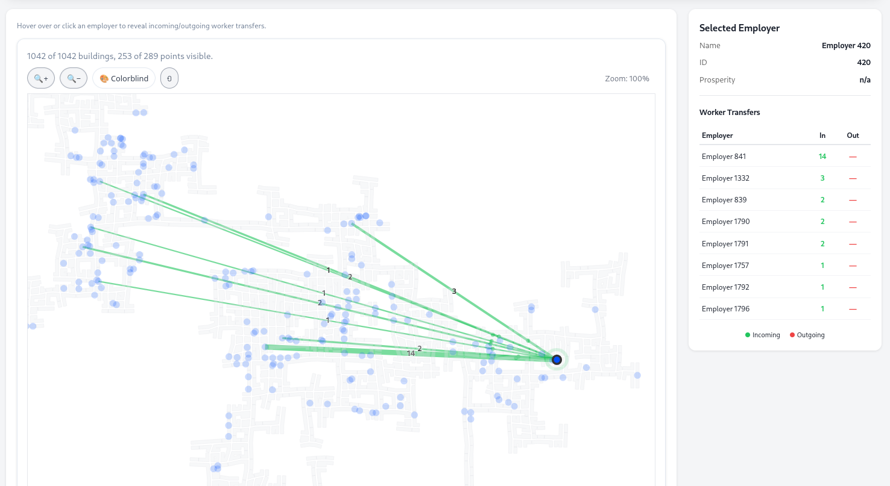
Temporally, city employment is concentrated in conventional daytime shifts. Check-in logs show a massive morning peak (7:00–8:00 AM) and a smaller post-lunch wave, rather than a 24-hour shift economy.
Spatially, businesses are distributed across multiple distinct geographic clusters rather than a single unified downtown. The labor mobility maps demonstrate that job transitions are highly networked. Turnover and rapid exchange are particularly intense within the denser central-western cluster, where firms are in close physical proximity. In contrast, peripheral employers appear more isolated, maintaining their workforce with fewer, but physically longer, cross-city transfer links. Mature, prosperous firms (e.g., Employer 1786) sit largely insulated.
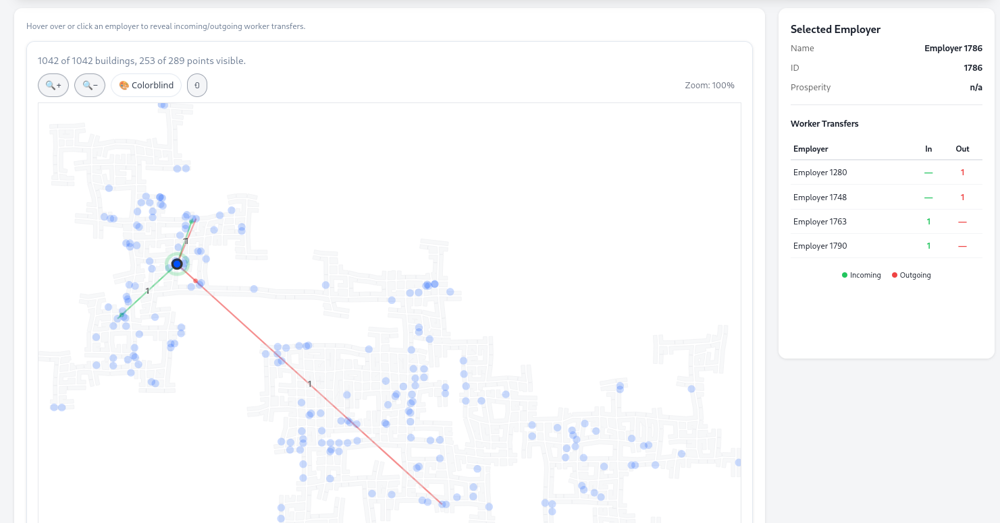